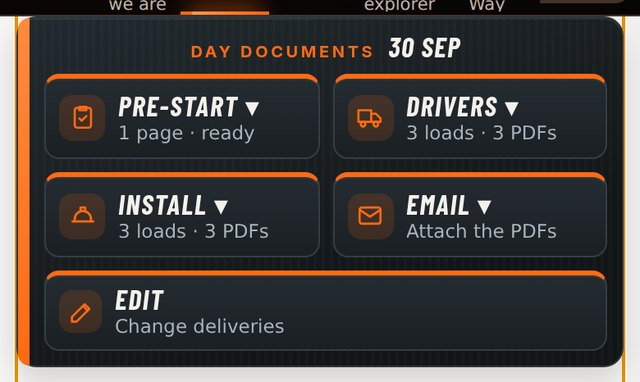
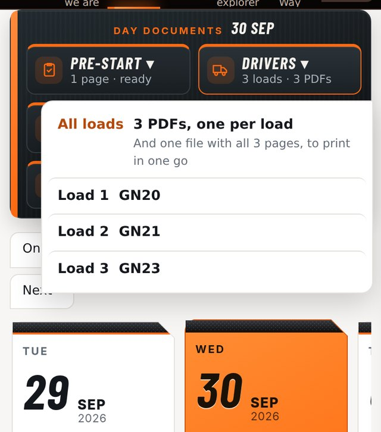
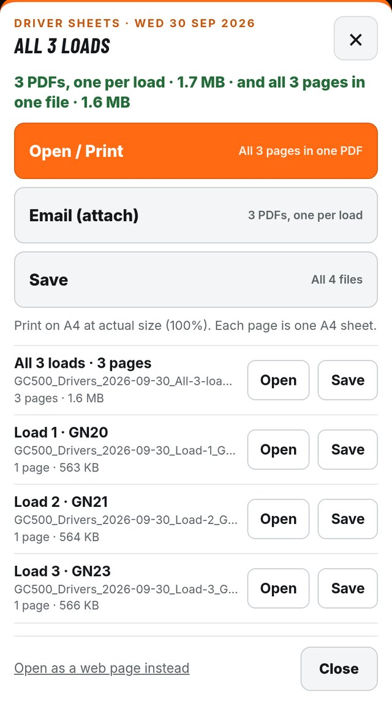
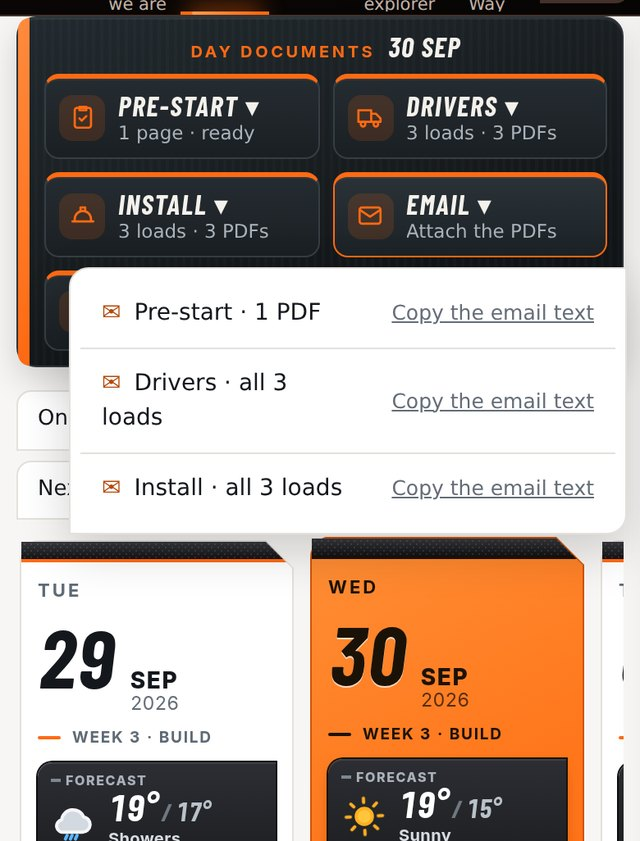
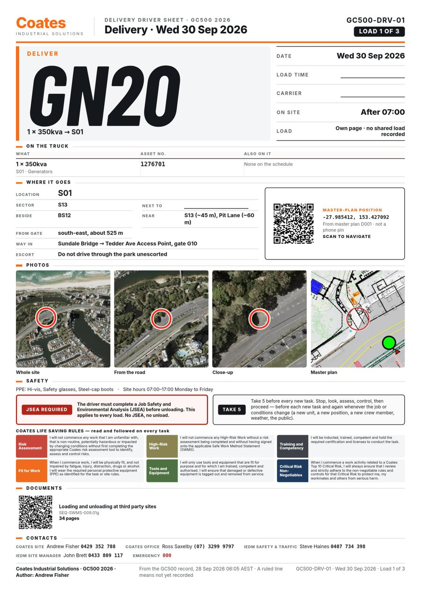
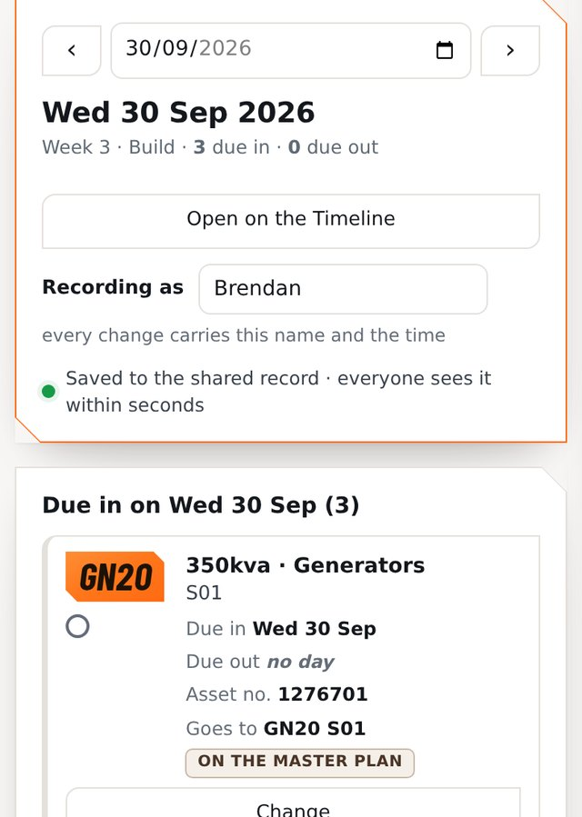
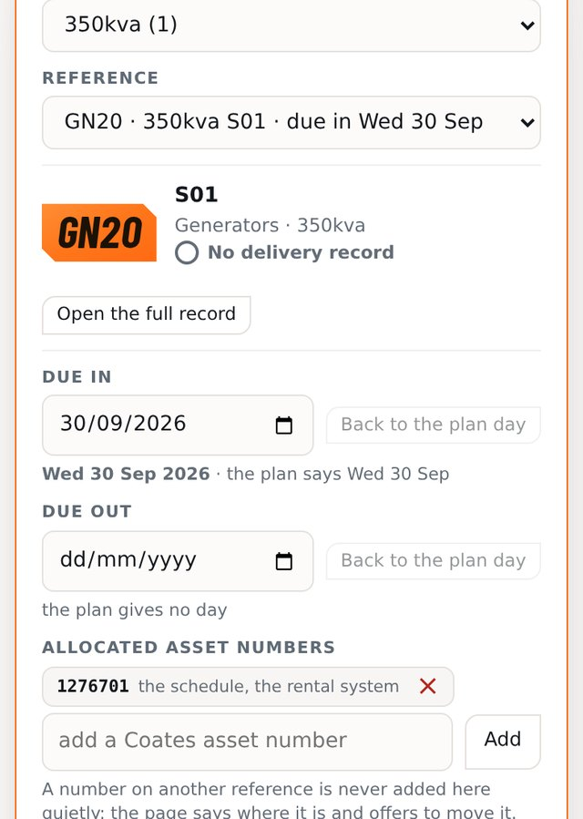
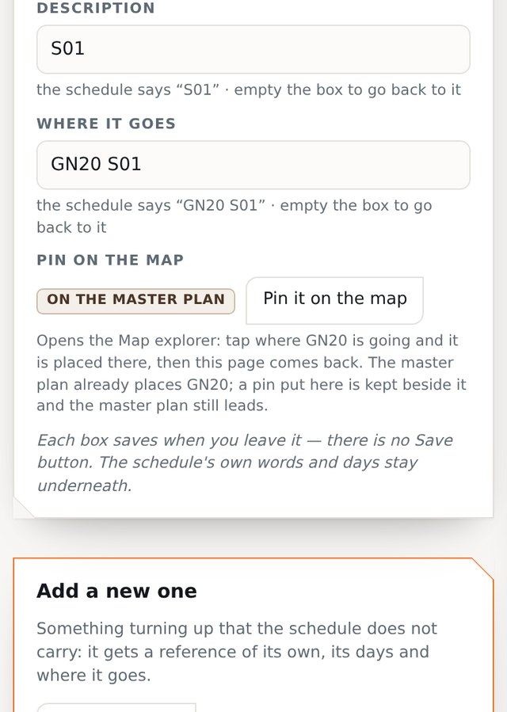
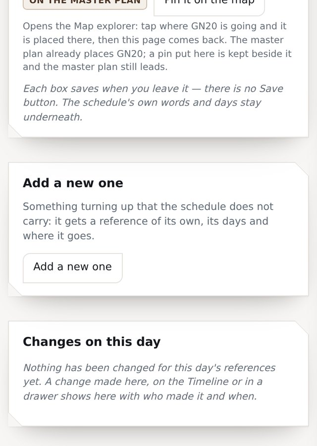

Driver print-outs and changing deliveries · for Brendan and Rebecca · 28 Sep 2026
Tap Timeline at the top, then pick the day (tap its card, or use Prev / Next / Today).
Under the photo is the Day Documents panel: Pre-start, Drivers, Install, Email and Edit.

Choose All loads – one PDF per truck, plus one file with every page to print in one go.
Or pick one load by its reference (e.g. Load 1 · GN20).

Give it a few seconds to make the PDFs. Then:
Open / Print – all pages in one file, ready to print.
Email (attach) – sends the PDFs as attachments.
Save – keeps the files on your phone or computer.
Each load also has its own Open and Save.

On the panel, tap Email and pick Drivers. On a phone, choose Outlook – the PDFs go as attachments (no links).
On a computer it saves the PDFs and opens a new email – just drag them in. Copy the email text gives you the wording if you need it.

One A4 page per load:

Timeline → pick the day → tap Edit (Change deliveries) on the Day Documents panel.
Put your name in Recording as – every change carries your name and the time.
Everything due in and out that day is listed. Tap Change next to the one you want.

Or pick the Type (e.g. generators) then the Reference – only what’s on the job is in the lists.
Due in / Due out – pick the new day. Back to the plan day undoes it.
Asset numbers – add or remove. If a number is already on another reference, it tells you and offers to move it.

Type over Description or Where it goes. Empty the box to go back to the schedule’s words.
Pin it on the map opens the map: tap where it’s going and you’re brought back.

Changes on this day lists who changed what and when, with Put back to undo.
Something turned up that’s not on the schedule? Use Add a new one – give it a reference, a description, its days and where it goes.
